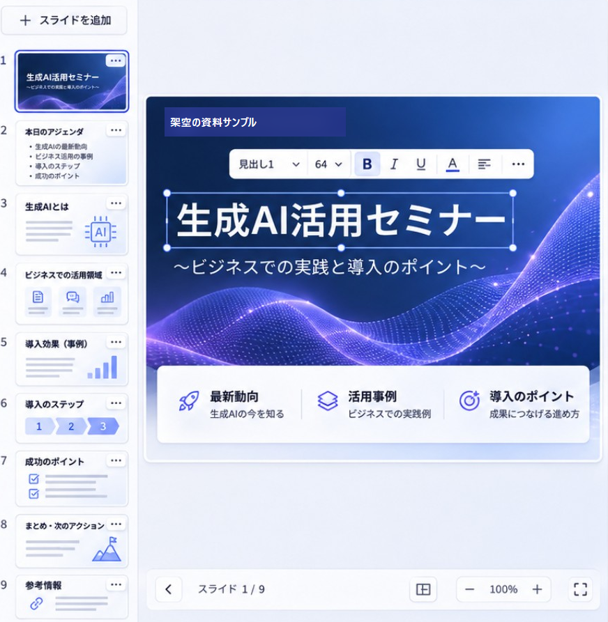

提案の準備から
会議の記録まで、
ひとつの画面で。
AIで構成案とスライドを作り、発表中は手元のメモで説明し、会議の要点を議事録に残す。営業・提案の準備を支える法人向けサービスです。
- アカウント人数の上限なし
- 会社単位の共通クレジット
- PowerPointで編集できる形式で書き出し

資料・企業情報・会議を、ひとつの土台でつなぐ
会社で共有するデータの土台
目的から、使い方を探す
「誰に、何を伝えたいか」を短く入力。構成案を確認・修正してから全スライドを作ります。
詳しく見る →現在と次のスライド、タイマー、ノートを手元に。聴衆側にはスライドだけを表示します。
詳しく見る →資料がなくても開始できます。要約・決定・未決・ToDoを分けて残し、検索できます。
詳しく見る →準備・発表・記録を支える5つの機能
短い依頼から、構成を確かめて一括生成
- テンプレートを選び、伝えたいことを短く入力
- AIの構成案を修正・承認してから全スライドを生成
- プレビューで確認し、適用するまで元の資料は変わりません
AIカンペ
要確認：担当者名は資料にないため推測しません。
聴衆にはスライドだけ、手元にはメモと回答案
- 現在・次のスライド、タイマー、ノートを1画面に
- 聴衆用の別ウィンドウへはスライドの表示情報だけを送信
- 選んだ質問に、資料を根拠にした回答案を表示
決定事項
- 提案書の改訂版を次回までに作成する
- 展示会の出展は見送る
未決事項
- 見積の前提条件（先方確認待ち）
ToDo 担当・期限 未入力
- 改訂版の構成案をまとめる
AI案 確認して適用
- 要約案を確認し、必要な部分だけ反映
資料がない会議でも、議事録だけで使える
- 会議名・企業・本文・決定・未決・ToDoを分けて保存
- 関連資料のひも付け、キーワード検索、TXT・Markdown・PDF出力
- AIの要約案は確認してから反映。担当や期限は推測しません
出典のある情報と仮説を分けて、提案に使う
- 公開情報には出典名・URL・確認日を記録
- 仮説や商談で聞いた情報は種類を分けて管理
- 選んだ公開情報だけを資料のスライドに追加
これまでの準備との違い
| 比べる点 | エイスケ | 汎用のスライドソフト＋別の議事録ツール | 過去資料のコピーと手作業 |
|---|---|---|---|
| 構成づくり | ◎AIの構成案を人が修正・承認してから全スライドを生成 | ○ツールにより生成機能あり。構成の承認手順は製品ごとに異なる | △過去資料の流用で、旧顧客の情報が残りやすい |
| 発表中のメモ | ◎聴衆画面にはスライドだけを送信。ノートは手元だけ | ○発表者ツールあり。共有する画面の選び方に注意が必要 | △紙や別画面のメモに頼る |
| 企業情報 | ◎出典・確認日付きで保存し、選んだ情報だけを資料へ | △別のメモやファイルで管理 | △担当者ごとに分散 |
| 会議と資料のつながり | ◎議事録に関連資料を最大10件ひも付け、まとめて検索 | ○ツール間を手作業でリンク | △ファイル名とフォルダで管理 |
| 利用人数と費用 | ◎アカウント人数の上限なし。会社単位の共通クレジット | ○多くは利用者ごとの契約 | — |
人数ではなく、会社単位のクレジットで
会社のアカウントは人数を問わず追加できます。
資料のAI生成や文字起こしなどで、会社全体の枠を共有して使います。
付与した月の翌月末まで使えます。
| プラン | 月額 | 年額 | 毎月の基本クレジット |
|---|---|---|---|
| スタート | 19,800円 | 217,800円 | 500cr |
| スタンダード | 49,800円 | 547,800円 | 1,500cr |
| ビジネス | 99,800円 | 1,097,800円 | 3,500cr |
料金は承認済みの販売条件（税別）です。年契約は12か月・年額は月額の11か月分、無料体験はありません。追加クレジットは25cr 1,500円／100cr 5,000円／1,000cr 42,500円（税別）です。課金とクレジットの製品機能は実装前のため、提供開始時に正式な条件書をご案内します。
利用の目安を試算する
資料作成：20枚以内1件3cr／AI部分修正：1枚・1回0.5cr／標準画像の生成・再生成：1枚2cr／録音後の議事録：1分0.15cr／Liveカンペと標準議事録：1分0.5cr（同じ会議の標準議事録は二重加算なし）。
この試算では利用量（本数と時間）だけを表示しています。実際の消費クレジットは提供開始時の見積機能で表示します。
会社の情報を、決めた範囲だけで扱う
ノート、想定Q&A、企業メモ、AIの回答は発表者画面だけに表示します。
音声は利用者が開始し、同意したときだけ使います。録音は契約中、保存容量の範囲内で保持し、個別・一括でダウンロードできます（提供開始時）。
送信する発言や企業情報は利用者が選びます。送信の同意は音声とは別に確認します。
ログインのたびに所属と役割を確認し、閲覧者は編集できません。
お問い合わせから利用開始まで
- 手順1お問い合わせ
資料請求またはデモのお申し込み
- 手順2画面デモ・ご相談
使い方と必要なクレジットを確認
- 手順3お申し込み
会社単位でのご契約
- 手順4利用開始
開始日にクレジットを付与
社内のご検討に必要な情報を、まとめてご案内
- 機能の一覧と、できること・できないこと準備中
- セキュリティ確認シートへの回答準備中
- 利用量にもとづく費用の試算準備中
決裁者・情報システム部門への説明に
資料は現在準備中です。ご相談の内容に応じて、ご案内できる範囲をお伝えします。
よくあるご質問
アカウントの人数に上限はありますか？
上限はありません。会社単位の共通クレジットを、利用する方全員で使います。
作った資料をPowerPointで編集できますか？
文字・図形・画像は編集できる形式で書き出します。表とグラフは図形の組み合わせで書き出すため、PowerPointの表・グラフ機能としては編集できません。
画面共有で発表者ノートが映りませんか？
聴衆用の画面は別のウィンドウで開き、スライドの表示情報だけを送ります。発表者画面ではなく聴衆用の画面を共有してください。
会議の録音は保存されますか？
録音は契約中、所定の保存容量の範囲内で保持し、一律1年後の自動削除は行いません。権限のある録音は個別・一括でダウンロードでき、不要な録音は削除できます。具体的な容量と提供開始時期は確定後にご案内します（録音の保存・ダウンロード機能は実装前です）。
長い会議でも文字起こしできますか？
1回2時間までの文字起こしは提供予定で、まだご利用いただけません。現在の実装では1回10分までです。提供開始時期と上限時間は確定後にご案内します。
クレジットが足りなくなったら？
追加クレジットを購入できます（25cr 1,500円／100cr 5,000円／1,000cr 42,500円・税別）。クレジット不足時の開始制限や途中停止の扱いは、確定後にご案内します。
PowerPoint形式への書き出しで、何がどう変わるか
| エイスケのデータ | PowerPointでの形 | タイミング | 編集 | |
|---|---|---|---|---|
| 文字 | → | テキストボックス（左・中央・右揃えを維持） | 書き出しの操作時 | できる |
| 四角・楕円・線 | → | 図形 | 書き出しの操作時 | できる |
| 画像（PNG・JPEG・WebP） | → | 画像 | 書き出しの操作時 | できる |
| 表 | → | 文字と図形の組み合わせ | 書き出しの操作時 | 文字・図形として編集（表機能は不可） |
| 棒グラフ | → | 図形の組み合わせ | 書き出しの操作時 | 図形として編集（グラフ機能は不可） |
| 発表者ノート | → | （主管確認後に記載） | — | — |
フォントや改行の位置は、PowerPointの環境によって変わる場合があります。
4つの考え方
- 聴衆用の画面は別ウィンドウで開き、スライドの表示情報だけを送信
- ノート・想定Q&A・企業メモ・議事録・AIの回答は聴衆に送らない
- 発表の終了やページ離脱で聴衆画面との接続を終了
- 音声は利用者が開始したときだけ取得
- 音声の利用と、AIへの送信は別々に同意を確認
- 録音は契約中、所定の容量内で保持し、個別・一括で取り出せます（具体的な容量は確定後に記載・機能は実装前）
- 同意の撤回やページ離脱で接続を停止
- 送るのは利用者が選んだ発言・資料・企業情報だけ
- AIの回答は確認してから反映。担当や期限は推測しない
- AIが止まっても、資料の編集と通常の発表は続けられる
- 署名付きのログイン情報で本人を確認し、所属と役割をデータベースで照合
- データベースの行単位で会社ごとにアクセスを制限
- 閲覧者は編集できない。権限がなくなった利用者は利用できない
- APIの鍵はサーバーだけで扱い、ブラウザへ渡さない
保存される場所
| データ | 保存先と扱い |
|---|---|
| 資料・画像・ノート | 利用中のブラウザに自動保存。共有保存を選ぶと会社のクラウド保存へ |
| 版の履歴 | 直近20件を保持。過去の版は別の資料として開くので、現在の資料は上書きされません |
| 企業情報・議事録 | 現在は利用中のブラウザ内に保存（会社内での共有方法は確認中・主管確認） |
| 音声・録音 | 契約中は所定の容量内で保持し、個別・一括でダウンロードできます。具体的な容量と保存期間の詳細は確定後に記載します（録音の保存機能は実装前） |